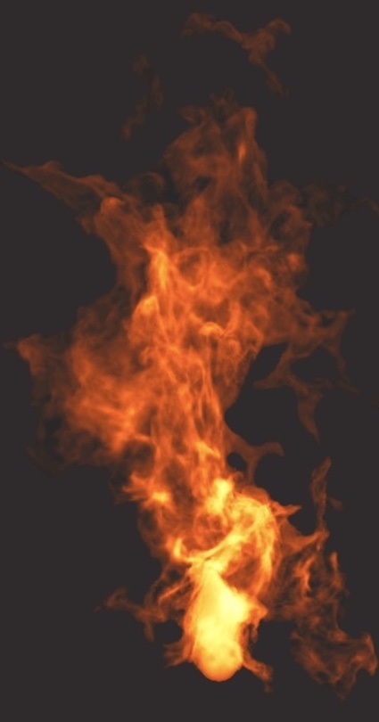

TRIAL BY FIRE

HOME
PROCESS
PROCESS
MOODBOARD
BRAINSTORMING
SKETCHES
FILES
MAYA FILES
UNITYFILES
BREAKDOWN
"HOW TO PLAY"
Background: You are Tom Changestone, an insurance investigator. Your goal is to investigate a burnt house to determine the cause of the fire. You have the ability to switch between the current, post fire house and past, pre-fire house (click Q to switch between versions of house, E to interact with clues, R to pull up the journal, and N and M to switch pages).
1. Clues will be placed around the house to be inspected
2. E.g. a diary, unpaid bills, messages on an answering machine
3. Inspecting the clues will add a journal entry with an image and a short description will be added to your notes
4. These notes will aid you in your final report
5. After you have searched the house and filled your journal, you must file a report to your company
6. Describe the mean, motive, and perpetrator
7. This report will decide if the family of the house receives insurance money
8. The report will be multiple choice
9. Options will change depending on which clues you discovered